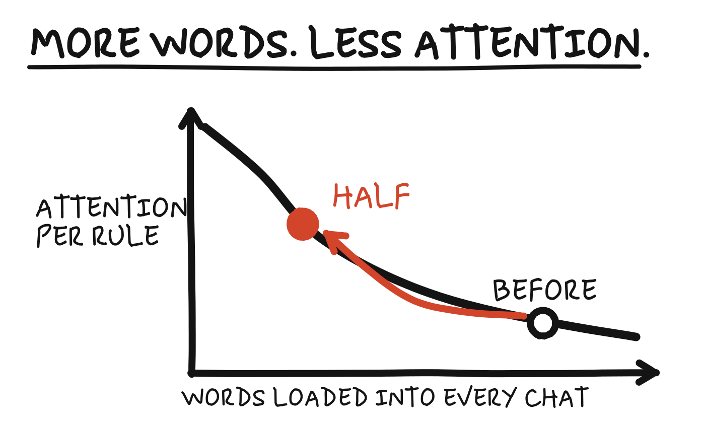
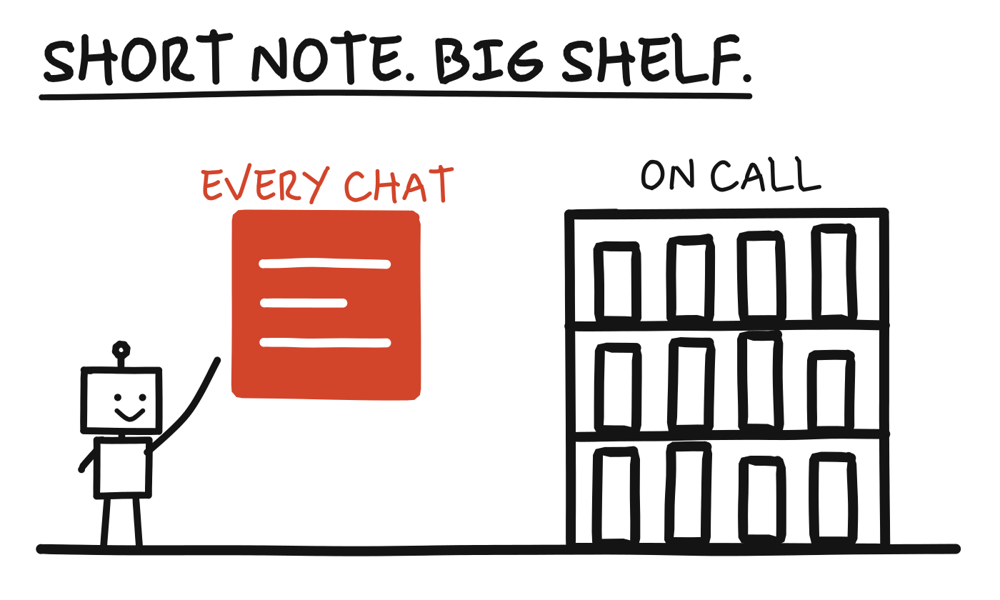
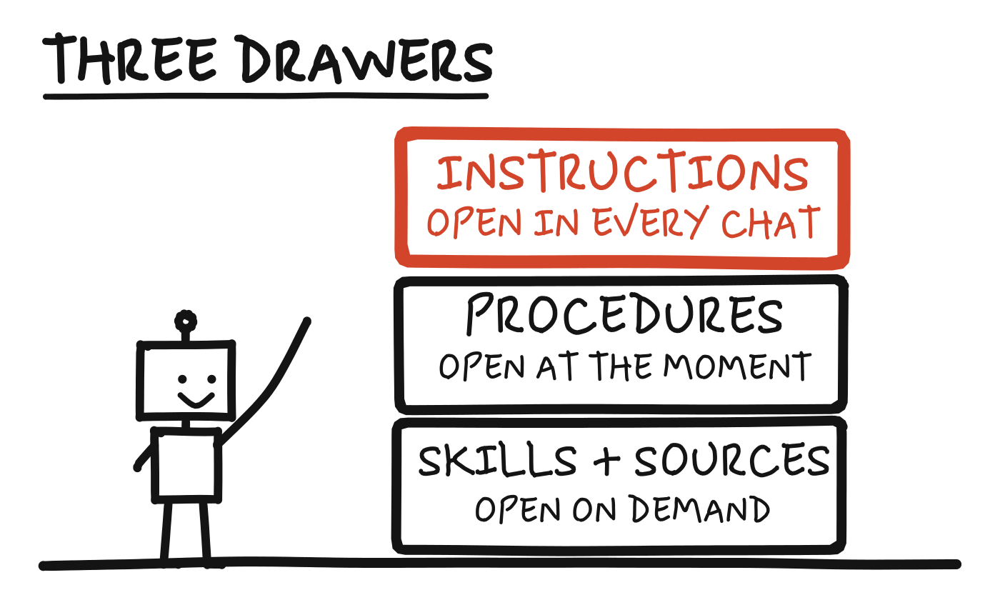
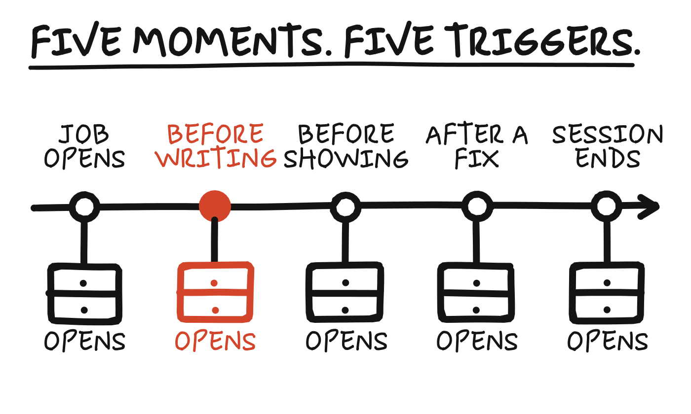
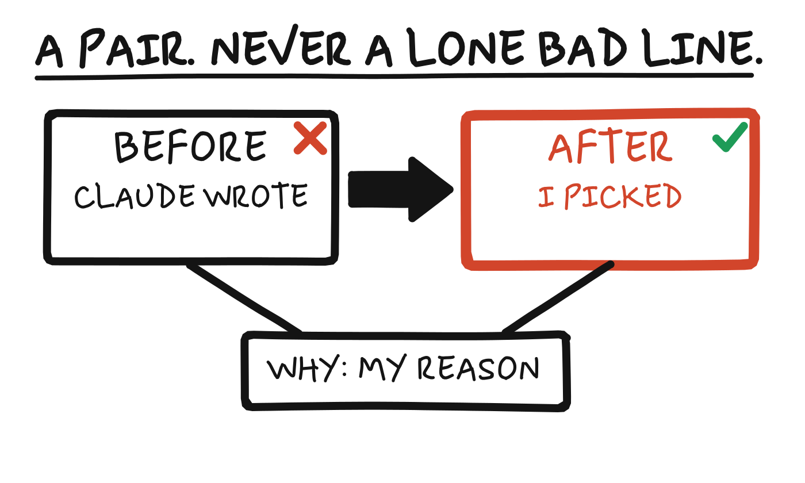
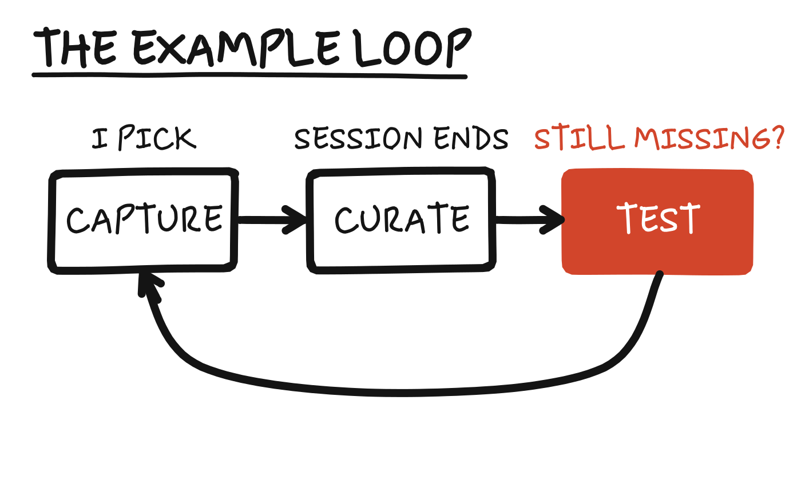
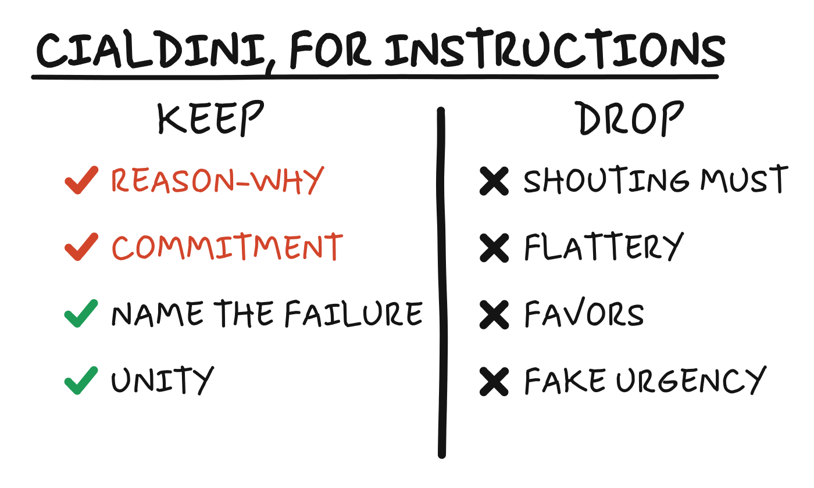

AI Evolution · The Gold Standard · November 13, 2026
A walkthrough of the Marketing instructions, rebuilt November 13, 2026. What's what, why it's there, and where everything lives.
Here's a thing that happened.
I'd been writing rules for Claude for months. Good rules. Every one of them earned the hard way, with a date and a story attached.
Then one night every rule got followed and the copy still didn't hold up.
So I put one line above all the rules: the purpose of every piece is copy I'd put my name on. Purpose over process.
And things changed. Not a little. A lot.
Which made me wonder what else works like that. What else is sitting in plain sight that changes everything once you see it?
Turns out the answer is mostly about one thing: attention.
Here's the part nobody tells you when you start writing instructions.
Claude doesn't read your instructions the way you read a contract, every clause weighted the same. It has a limited amount of attention, and every line you add spends some of it.
Anthropic's engineers say it straight: context is a finite resource with diminishing returns, and the more you pile in, the worse the model gets at using any of it. They call that context rot.

A "why" picture: as the words loaded into every chat go up, the attention each rule gets goes down. The shape is the point, not the numbers.
You already know this. It's a sales letter.
The opening frames everything after it. Padding loses the reader. And a letter that says everything at once ends up saying nothing.
That's why the purpose rule worked. It wasn't one more rule. It was the frame every other rule gets read through, sitting right at the top where it gets the most attention.

So if attention is the budget, the job is spending it in the right place.
The best people building with Claude all land on the same shape. Anthropic calls it progressive disclosure: load the details only when they're needed. Picture a filing cabinet.

A "where" picture. The top drawer is open in every chat. The others open only when their moment comes.
Only what every single chat needs. The purpose. My three rules. And a list of the moments that call for something more, each pointing to where its details live.
How the Assumptions Gate runs. The All-Out Pass. The end-of-session batch. These matter enormously, but only at their moment. So they sit one step away, and the instructions say exactly when to open them.
A skill shows Claude one line, its description, all the time. The full skill loads only when the job matches. That's why a skill's description is the most important line in it.
The sources file is the map of Drive, the emails, Ray's books. Read when you need to find something, not before every job.
Here's the rebuild. The key fact: no rule was rewritten. Every rule either stayed or moved, word for word.
| File | What it holds | When it loads |
|---|---|---|
instructions/marketing.md | Purpose, the three rules, the five moments as triggers, the short always-on rules | Every chat |
governing/marketing-procedures.md | Assumptions Gate, RAM, All-Out Pass, clean-copy workflow, Screen Gate, the end-of-session batch | When its moment fires |
governing/line-examples.md (new) | Before-and-after pairs from my real picks | Every copy job (the copy load) |
skills/marketing-council | The Council, the Deep Room, the Mastermind Room | Any brainstorm |
skills/example-bank (new) | How examples get captured, curated and tested | When I pick or correct |
governing/marketing-sources.md | Living docs, Drive folders, Ray's books, my own emails | When something needs finding |
| Changelog | Why each rule exists | Only to answer "why" |
The result: the part that loads into every chat went from about 57,600 characters to about 28,800. Half. From 242 lines to 165.
And nothing's gone. It's just in the right drawer.
The other thing I got right early, without knowing why, is the moments.
Most people organize instructions by topic: tone, format, research, and so on. Mine are organized by when: when an objective opens, before a line is written, before anything is shown, after a correction, at the end of the session.

A "when" picture. Each moment is a trigger, and each trigger opens its drawer.
That's a trigger structure. It's how the best skill builders write too. A rule tied to a moment fires at that moment. A rule floating in a list fires whenever Claude happens to remember it, which, in a long session, is less and less.
That's what I watched happen on October 25 and 26. Rules agreed early stopped holding later in the same session. The research predicts exactly that.
Anthropic says examples are one of the most reliable ways to steer what Claude writes. A few good ones beat a long list of rules.
So, was I using examples well?
Here's the honest answer. I was collecting them brilliantly and serving them badly.
Voice Reference Section 5 has dozens of logged picks. Claude's version, the one I chose, and why. That's a goldmine most people don't have.
But it sat as a log. History, filed in a long voice document. The lessons got turned into abstract rules ("sound beats cleverness"), and the actual pairs, the thing that teaches, weren't in front of Claude at the moment it was writing.

A "who and what" picture. A wrong line never travels alone. It sits beside its fix and the reason.
So now there's Line Examples. Five patterns, the five places Claude's lines miss me most. Three real pairs each. Like this one:
Three rules for examples, from Anthropic and from what worked:
And one pair where the fix was the mistake (Claude "fixed" an ambiguous subhead that was ambiguous on purpose). That one stops the patterns from being applied by reflex.
A file of examples goes stale. So the example-bank skill keeps it alive, for every project, not just Marketing.

A "how" picture. Capture when I pick, curate at session end, test when a pattern keeps missing.
The test is the piece I didn't have. You run a real job without the examples, then with them. If the second version doesn't move toward my picks, the examples aren't teaching. Swap them. It's split-testing, for instructions.
This one sounded big in the video and vague in practice. So here's what's really going on.
In 2025, a Wharton team, with Robert Cialdini himself on the paper, tested his seven principles on an AI model. Authority, commitment, liking, reciprocity, scarcity, social proof, unity.
The catch: they were trying to get the model to do things it's trained to refuse, like insulting the user. And it was GPT-4o mini, a small model. Persuasion more than doubled compliance, from about a third to about 72%. On the bigger model, the effect shrank a lot.
So the finding isn't "write persuasively and get better copy." It's that these models picked up human social habits from human writing. They respond to the same cues people do.
Jesse Vincent, who builds the Superpowers skills, took that and applied it to his own skills. Not to break rules. To make rules stick. His mapping:

A "who and what" picture. What to keep, what to drop.
Twenty years of copywriting, showing up in how I write to a machine.
Anthropic's own guidance points the other way on loud authority. Current Claude models listen closely, so "CRITICAL: You MUST" makes them overreact. Their advice: say it normally and give the reason. Their skill-writing guide calls ALWAYS and NEVER in capitals a yellow flag.
My Marketing instructions use "never" 65 times. They're lowercase and nearly all come with a reason, so they're mostly fine. But the second round of trimming should turn the ones that can be said positively into what to do instead.
Sources: Anthropic, Effective context engineering for AI agents · Anthropic, Skill authoring best practices · Anthropic, Prompting best practices · Wharton Generative AI Labs, persuading LLMs · Jesse Vincent, Superpowers · HumanLayer, Writing a good CLAUDE.md
Drawings in the style of Dan Roam's Back Of The Napkin codex. Proposed v1.80 of the Marketing Project Instructions, November 13, 2026.